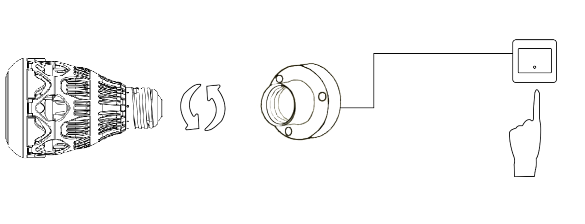

Introduction
Stellar Wi-Fi uses the WiFi to control Sansi smart bulbs on, off, stepless brightness or color change. The bulb has eight built-in scenarios. You can also interact with the bulb through songs in the library.
Get Application
iOS users may search for "Stellar Wi-Fi" in the App Store.
Android users may search for "Stellar Wi-Fi" in the Google Play Store.
Or you can scan the QR code below.

Install Equipment
Install the LED bulb and turn it on.
iOS Instructions
1. Registered account


2. Add the device to the target WiFi


The full color bulb which network name is similar to SLRGB*********.
The first connection may be a little longer.

If the lamp is not found on multiple refresh lists, check to see if the phone is connected to the target WiFi or the above step error
3. Functional operation
<1> Colored lights
<2> Color temperature light：Now only color temperature control and countdown switch are supported
Click on the upper left corner of the music selection button, and select your favorite song, and then enjoy colorful lights changing with music.
There are 8 different scene modes. Click to select different scenes, and enjoy colors changing with different frequency.
Software version > 2.0,The lights connect WiFi and the phone connect WiFi is the same WiFi


In the Settings screen, the lamp can manipulate attributes:
- Modify lamp name
- Countdown
- Switch the light WiFi
- Whether to allow remote control
- Reset lamp (hint: lamp will restore factory setting)
- Mac address of the lamp
- The type of lamp
- Software version of the lamp
- Hardware version of the lamp

Sidebar

- Portrait settings
- Nickname showed
- Online help
- Associated amazon
- Account and password Settings
1. Click the icon . Enter the personal information interface, click on the head to set the avatar, and click the nickname line to set the nickname

2. Click the Config . Enter the setup interface, reset the password and about us

3.（Alexa Function）
Click the Associated amazon . Enter configuration of amazon function interface, implement voice control lamp
Group Operations
click on the upper right corner ＋ button,click the Add Group Enter a group name and select the device to add a new group
A device can only be added to a group, and if the device in another group is selected, the device will be removed from the original group
Click the upper right corner of the interface Edit button. Enter the edit group interface, modify the group name, and add and delete the device in the group.
Android Instructions
1. Add device to WiFi
- Find the bulb’s Wi-Fi network (name SLRGB*******), and connect it. Please confirm the connection is successfully established by waiting until the Wi-Fi icon appears at the top of the status bar.
- Open the app, click the button [+], click [Add device], click [Detected available device], then choose device and click [Save].
- Enter the app, click bulb to enter the control interface, click the button on upper right to enter setting interface.
- Click [WLAN] to enter a new interface.
- Choose the WiFi which you want to join, type the password and then click [Save].
- Connect the new WiFi and you can search the bulb.
2. Tourist Mode
The tourist mode means that the user uses Stellar Wi-Fi without logging in, and the user can only control the bulbs that have been added to the current WiFi. The user enters the mode through the "exit registration" of the sidebar and selects the tourist mode in the pop-up login interface.
- Click the light bulb to enter the control interface. The color control interface shows if it is a RGB bulb, while the CCT interface shows if it is a color temperature bulb.
- Music mode (For RGB bulb only)
Click on the upper left corner of the music selection button, and select your favorite song, and then enjoy colorful lights changing with music. - Scene Mode (For RGB bulb only)
There are 8 different scene modes. Click to select different scenes, and enjoy light colors changing with different frequency. - Countdown Mode (Software version > 2.0 only)
Click the button on the right side of the switch button on the control interface (If you this button is unavailable, please make sure the device software version is the latest one. If not, please update your device software).
3. Login Mode
In login mode, Alexa function is available.
- Login
Type your username, password and click [login]. - Connect to Amazon (Alexa)
Click the [Binding amazon] button in the side menu, then click [Binding amazon] button. Follow the Amazon instructions to complete the operation so that you can associate your Stellar account with your Amazon account. Now you can control your bulbs by voice. - Other skills are the same as Tourist Mode.
Restore Factory Settings
- Turn off the bulb and wait for 20 seconds
- Repeat the following operations for 3 times.
- Turn on the bulb for 5 seconds.
- Turn off the bulb for 5 seconds.
- Turn on the bulb for the 4th time and wait for 10 seconds. The bulb will now restore the factory settings. It will change colors according to: slow red → slow green → slow blue → warm white and then enter Wi-Fi access point mode.
System Requirements
Stellar Wi-Fi runs on the following devices:
- iOS devices running iOS 8.0+
- Android devices running Android 4.2+
One or more Sansi Smart LED bulb.
Contact Us
For technical support, please contact us via service@sansitech.us.